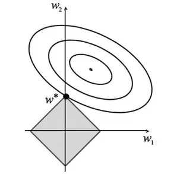

$$\Omega(\theta)= ||w||_1=\sum_{i}{|w_i|} $$
$$
\nabla_w\tilde{J}(\mathbf{w};\mathbf{X},\mathbf{y}) =
\nabla_w J(\mathbf{w}; \mathbf{X}, \mathbf{y}) + \alpha sign(\mathbf{w})
$$
- generates simple and interpretable model
- more sparse
- robust to outliers
